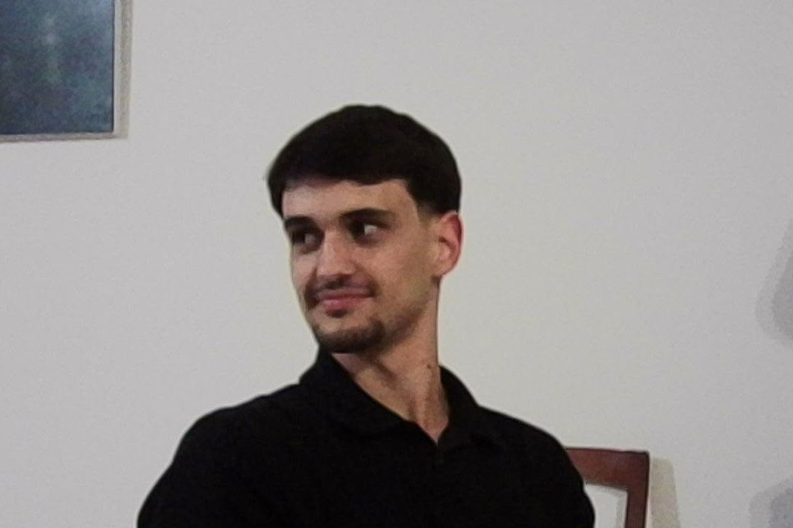

Lourenço Gaspar

Lourenço Gaspar é o fundador da LGDigital, uma agência de marketing digital que ajuda empresas de serviços e negócios locais a conseguir mais clientes através do Google e das redes sociais. Trabalha com Google Ads, Meta Ads, SEO, SEO Local e AI SEO.
Olá, é o Lourenço.
Se pesquisaste o meu nome, chegaste ao sítio certo. Esta página junta tudo o que precisas de saber sobre mim.
O que faço
Fundei a LGDigital e continuo à frente dela.
Ajudamos empresas locais a aparecer à frente da concorrência no Google e nas redes sociais. Google Ads, Meta Ads, SEO, SEO Local e AI SEO.
Quando alguém na tua zona procura o que fazes, deve encontrar-te a ti. Não à concorrência.
Sou eu que faço o trabalho. Quando ligas, falas comigo.
Um exemplo: a OrtoFirst investiu 2.906 € em anúncios e fechou 74.100 € em contratos. Lê o caso completo.